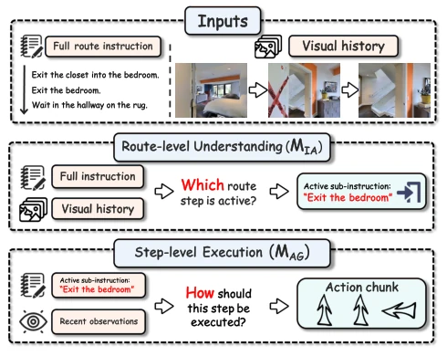
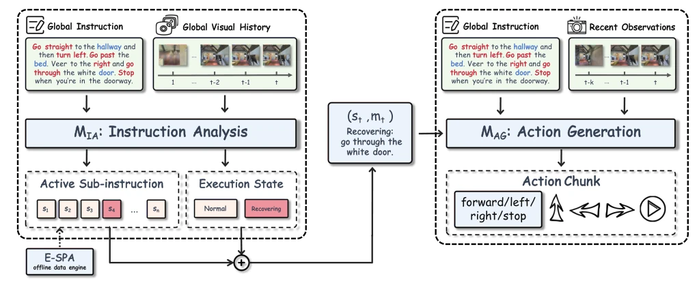
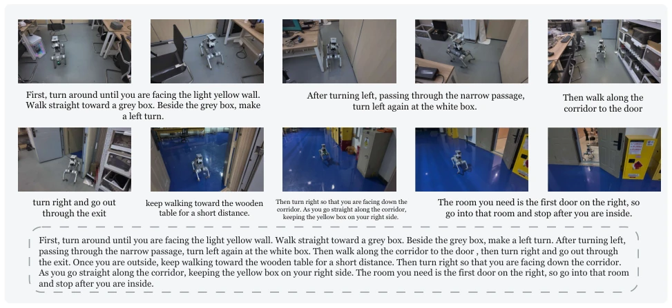
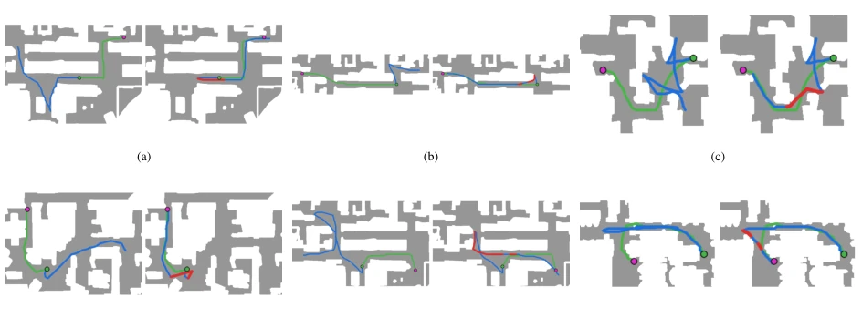
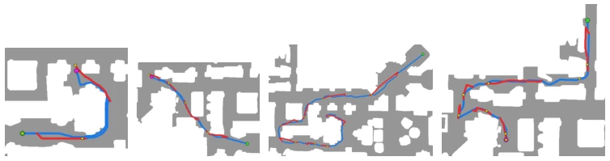
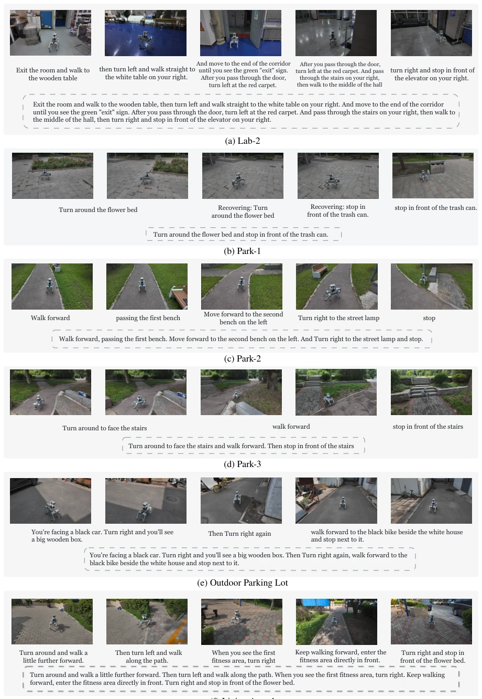

这篇论文给 VLN 领域开了个“分家”的方子。以往的大模型导航器喜欢“一口吃成胖子”，把语义理解和动作执行混在一起训练，结果一旦偏离路线，Agent 就分不清是“路走错了”还是“腿迈错了”。Route2Step 强行把这两个任务拆开，用 MIA 管“我在哪一步”，MAG 管“怎么走”。虽然架构看着有点繁琐，增加了推理延迟，但效果确实实打实，R2R-CE 上 SR 涨了 7 个点。不过，E-SPA 这种离线对齐过程依赖特定环境几何特征，会不会在复杂场景下崩盘？还有，真机部署虽然做了，但毕竟是在受控环境，离真正的“无人区”还有距离。总的来说，是个思路清晰、落地性不错的尝试，但别指望它能解决所有导航幻觉，尤其是长程任务中的累积误差。
This paper offers a "separation" prescription for the VLN field. Previous large-model navigators liked to "get fat in one bite", mixing semantic understanding and action execution training together, resulting that once deviating from the route, the Agent cannot distinguish whether it is "the path was wrong" or "the step was wrong". Route2Step forcibly splits these two tasks, using MIA to manage "which step I am on", and MAG to manage "how to walk". Although the architecture looks somewhat cumbersome, increasing inference latency, the effect is indeed solid, SR increased by 7 points on R2R-CE. However, will this offline alignment process like E-SPA, which relies on specific environmental geometric features, collapse in complex scenarios? Also, although real-robot deployment was done, it was after all in a controlled environment, still far from the true "no-man's land". Overall, it is a clear-thinking, decently feasible attempt, but do not expect it to solve all navigation hallucinations, especially cumulative errors in long-horizon tasks.
研究动机Motivation
现有的 VLM-based VLN 方法（如 Zhang et al. 2024; Wei et al. 2025）大多采用统一策略，直接将语言视觉映射到低层动作。这种“端到端”看似高效，实则掩盖了两种本质不同的错误：语义进度错误（选错了步骤）和执行错误（动作没做好）。一旦 Agent 偏离路线，传统的 DAgger 式后训练（Ross, Gordon, and Bagnell 2011）虽然能纠正动作，却无法修正错误的进度状态，导致后续决策基于错误假设。此外，Progress-Think (Wang et al. 2026a) 等虽有进度模块，但仍与策略联合微调，难以彻底解耦。因此，亟需一种显式接口，将语义追踪与局部执行分离，避免动作更新覆盖语义估计，从而提升长程导航的鲁棒性。
Existing VLM-based VLN methods (e.g., Zhang et al. 2024; Wei et al. 2025) mostly adopt unified strategies, directly mapping language vision to low-level actions. This "end-to-end" appears efficient, but actually conceals two essentially different errors: semantic progress errors (choosing the wrong step) and execution errors (actions not done well). Once the Agent deviates from the route, traditional DAgger-style post-training (Ross, Gordon, and Bagnell 2011) can correct actions but cannot correct the erroneous progress state, leading to subsequent decisions based on wrong assumptions. In addition, although Progress-Think (Wang et al. 2026a) etc. have progress modules, they are still jointly fine-tuned with the policy, making it difficult to fully decouple. Therefore, an explicit interface is urgently needed to separate semantic tracking and local execution, avoiding action updates overwriting semantic estimates, thereby improving long-horizon navigation robustness.

Figure 1: Route2Step separates route-level understanding from step-level execution. MIA identifies the active sub- instruction from the full route instruction and visual history, while MAG executes it using recent observations.
The core of Route2Step lies in the explicit semantic-execution interface. The overall process is divided into two independent modules: Instruction Analysis Module (MIA) and Action Generation Module (MAG). MIA receives global instructions and visual history, predicting the currently activated sub-instruction (Active Sub-instruction) and execution status (Normal/Recovering); MAG then generates action blocks based on this interface and recent observations. This design forces semantic progress to become a condition for action generation, rather than an implicit feature. To solve the problem of R2R lacking fine-grained annotations, the authors proposed E-SPA (Energy Minimization Semantic Path Alignment). It splits route instructions into executable sub-instructions via dynamic programming and matches trajectory segments; the cost function includes visual-text compatibility, action consistency, duration regularization, and stair anchor constraints. Training is divided into two steps: first initialize with aligned expert trajectories; then collect policy-induced history through Rollout with fixed sub-instructions. MIA uses these histories for state-level supervision (without action labels), while MAG introduces expert recovery actions only upon repeated failures for selective action supervision. Gradients do not propagate across the interface, ensuring semantic estimates are not overwritten by action updates.

Figure 2: Overview of Route2Step. Given the global instruction and visual history, MIA predicts the active sub-instruction and execution state, identifying which route step remains active and whether execution is Normal or Recovering. Conditioned on the global instruction, this explicit interface, and recent observations, MAG predicts action chunks for executing the active step.
Experiments were conducted on R2R-CE and RxR-CE Val-Unseen, with main metrics being SR and SPL. Route2Step on R2R-CE SR increased from 48.1% to 55.3%, SPL from 43.3% to 48.2%, outperforming baselines like StreamVLN. Ablation experiments show that state-level correction (190K samples) is more effective than pure action-level correction (200K samples), and explicit prediction of execution status is better than fixed status. Cross-policy transfer experiments show that injecting MIA-predicted sub-instructions can improve the performance of frozen policies such as NaVid, Uni-NaVid. Additionally, deployment was conducted on the Unitree GO2 real robot, completing 19/33 autonomous tasks in complex indoor/outdoor environments, verifying simulation-to-reality transfer capability.

Figure 4: A real-world execution trace in a complex indoor environment. Observations are annotated with the active sub- instruction predicted by MIA, providing an interpretable account of semantic progress during long-horizon navigation.

Figure 6: Representative recovery-routing cases. For each case, the left panel shows execution with recovery disabled by forcing the state to Normal, while the right panel shows the same episode with predicted recovery routing enabled. Blue and red segments denote actions executed under Normal and Recovering, respectively, while green denotes the reference trajectory.
其他图片Other Figures

Figure 5: Representative top-down visualizations of controlled off-path histories used for direct evaluation of MIA. Blue denotes the on-path trajectory, while red denotes the constructed deviation and reconnection trajectory. The ground-truth active sub- instruction remains fixed throughout each sequence.

Figure 7: Real-world experiments (part I). Representative real-world navigation cases in diverse indoor and outdoor environments.